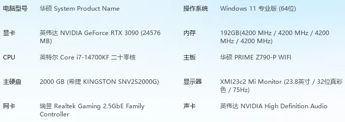
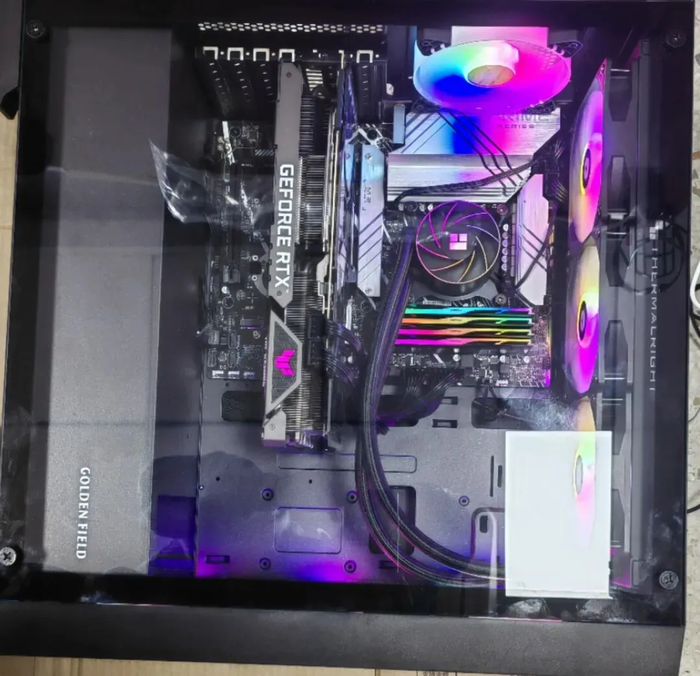
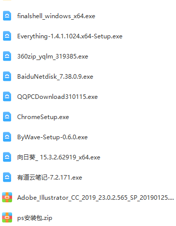

啥分(you)析(xi)做(wan)不了啊
原文：https://mp.weixin.qq.com/s?__biz=MzAwMzIzOTk5OQ==&mid=2247520888&idx=2&sn=18746c66dc3bde17131dd819a26263bd&chksm=9b3ceb28ac4b623eda41c2cc6f6bc479b0f3c00b04376a4b3cbd28b653a0ffacf6ce4771807b#rd 合集：服务器

一、写在前面
人生苦短，为了加快我分析单细胞与空间转录组的速度(进可生信、AI，退可3A大作)，新配了一台工作站具体配置大家可以参考下面这张配置表和机箱照片。我这套配置的费用在2w +。当然大家有自己心仪的配置也可以找客服微信[Biomamba_kefu]配置。


如果你的计算机不足以支持大规模的计算，且不希望花太多￥在买电脑上，可按需选用适合自己的计算资源：共享(经济实惠)：足够支持你完成硕博生涯的生信环境独享(省电省心)：生信分析不求人
实体(稳定高效)：为实验室准备一份生物信息学不动产
访问链接：https://biomamba.xiyoucloud.net/
更多内容可咨询客服微信[Biomamba_yunying]

二、系统与配置选择
系统方面，为了更好的兼容WSL2 ，我选择了Win11 ，另外我的Bios中还有一份Ubuntu的双系统 。CPU方面选的也比较有性价比(选次顶配就完事了)，i7-14700KF有20核28线程 ，单线程的计算能力也十分在线，足够我们跑常见的生信流程。唯一比较遗憾的是这块CPU只支持192GB的内存 ，而4*48GB的内存条是最不具性价比 的(如果可以我想把内存拉到384GB，省得在各个服务器之间东奔西走)。显卡方面，考虑到空间转录组和机器学习都会用到显存，因此我选择了RTX3090(除了专业炼丹的卡，普通民(you)用(xi)卡最大显存就是24GB的3090和4090，显然我没那么多预算，所以选由于功耗比一般不用于挖矿的前者)。其它比较重要的配置就是我选了2TB的固态+5TB的机械硬盘(单细胞原始数据一个样就一百G，这个容量不过分)。
三、工作环境配置
说完系统和硬件，再记录一下我的环境配置过程吧，我安装了一些我日常工作需要用到的软件与环境，基本都是神器：
WSL2中的jupyter需要这么设置：
-
-
-
-
- *
-
-
-
# 通过配置文件设置运行端口cat >> ~/.jupyter/jupyter_notebook_config.py << ENDc.NotebookApp.ip='0.0.0.0' # 允许任何IP的远程连接c.NotebookApp.open_browser = Falsec.NotebookApp.port = 12345 # jupyter notebook 运行端口，根据实际情况设END
更多jupyter使用可见：码Python神器：jupyter notebook
Rstudio:
安装以下内容，否则在装R包Cairo时会报错，影响R语言可视化功能的实现
*
sudo apt install libcairo2-dev
接下来的安装步骤可参考：
Rstudio-server的安装、配置、维护如何连接终端和Rstudio-serverRstudio常见使用技巧
安装完毕后本地默认的IP和端口为：localhost:8787
另外还有一些windows下的软件，给大家放在百度云链接里了：

链接：https://pan.baidu.com/s/138hx1heu4yOc9ISPhUh4Nw?pwd=9i39
提取码：9i39
finalshell不用多说，链接服务器敲代码/传输文件必备(生信分析为什么要使用服务器？)；Everything就相当于windows的locate命令(Linux| 19.文件查找 find, locate, which)找文件秒出；360压缩，windows中打包解包必备；QQPC电脑管家，没事可以给你清清文件查查配置，广告相对于竞品几乎是没有；谷歌浏览器几乎也是必备的；Bywave，魔法上网用的，翻github去外边学习必备，大家可以访问这个链接： https://user.by.ltd/aff.php?aff=23313；向日葵，用于远程控制电脑，出差党必备；有道云笔记，同样是出差党必备，能够帮助你随时随地获得自己的代码笔记(进来领有道云笔记会员)；AI不用多介绍，绘制流程图用得上；PS我一般用来把AI输出的PDF图片转为TIFF。

如何联系我们

 公众号后台消息回复不便，这里给大家留一下领取资料及免费服务器(足够支持你完成硕博生涯的生信环境)的微信号 ，方便各位随时交流、提建议（别问在么，添加时直接说来意）。此外呼声一直很高的交流群 也建好了，欢迎大家入群讨论：
公众号后台消息回复不便，这里给大家留一下领取资料及免费服务器(足够支持你完成硕博生涯的生信环境)的微信号 ，方便各位随时交流、提建议（别问在么，添加时直接说来意）。此外呼声一直很高的交流群 也建好了，欢迎大家入群讨论：
大家可以阅读完这几篇之后添加给生信入门初学者的小贴士 如何搜索公众号过往发布内容

 您点的每个赞和在看，我都认真当成了喜欢
您点的每个赞和在看，我都认真当成了喜欢